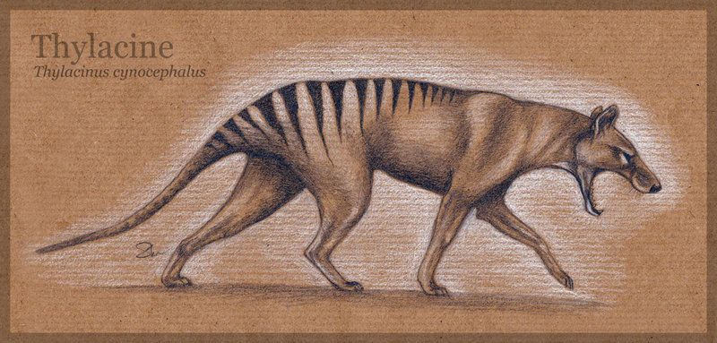

Extincion
¿Que es?
La extinción es la desaparición total de una especie en el planeta. En general, es un proceso
natural de la evolución, por la que van apareciendo nuevas especies y desapareciendo otras,las
cuales no son capaces de adaptarse a los cambios de su forma de vida o son desplazadas
por nuevos competidores. Así pues, la selección natural tiene un papel relevante en este
proceso.
Pero los humanos lo han empeorado al acelerar los ritmos de extinción natural debido a nuestro
papel en la pérdida de hábitat, el cambio climático, las especies invasoras, las enfermedades,
la sobrepesca y la caza.

¿Cuales son las consecuencias de la extincion?
La más palpable, es la pérdida de biodiversidad en un hábitat, es decir, la falta de miembros
de dicha especie. Esto, a su vez, acarrea consecuencias ya que, en un ecosistema, todos sus
miembros se interrelacionan en mayor o menor medida. La desaparición de uno de ellos provoca
cambios, que acaban afectando al resto y provocando, a su vez, que sean más vulnerables a
especies invasoras.
El mayor problema de las consecuencias de la desaparición de una especie es el hecho de que no
estamos seguros de cómo afectará esto al sistema donde vive y se dará un desequilibrio
ecológico en los ecosistemas que la naturaleza tendrá que reajustar, lo que conlleva mucho
tiempo. Aquí radica la necesidad de la conservación de la biodiversidad.
¿Como podemos evitar la extincion de una especie?
Ya que se trata de un proceso natural, resulta dificil evitar la extinción. Sin embargo hay
acciones que podemos hacer para atenuar nuestro impacto sobre este proceso y conseguir frenar
su aceleración. Algunas son:
- Prohibir la caza de animales.
- Evitar la deforestación de bosques.
- Delimitar las áreas protegidas y reservas naturales.
- Evitar la contaminación de los recursos naturales.
- Promover planes para la reproducción en cautiverio.
- Contribuir a la disminución de la tala de árboles con el reciclaje.
- Respetar las áreas protegidas y reservas naturales.
- Comprar con responsabilidad.
- Restaurar los ecosistemas.
- Hacer donaciones.